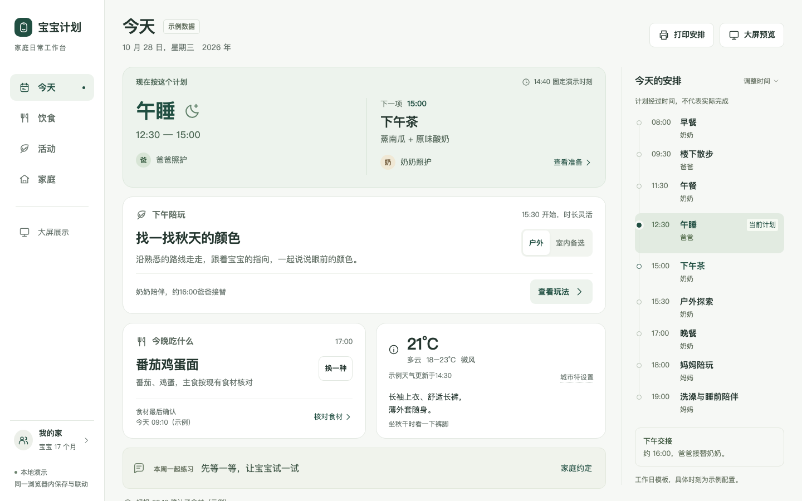
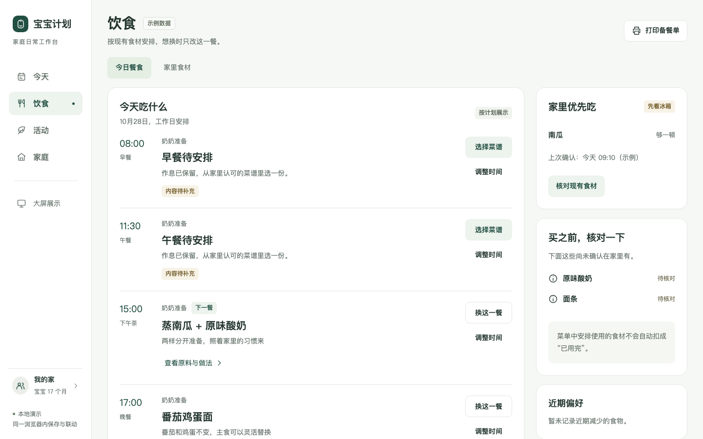
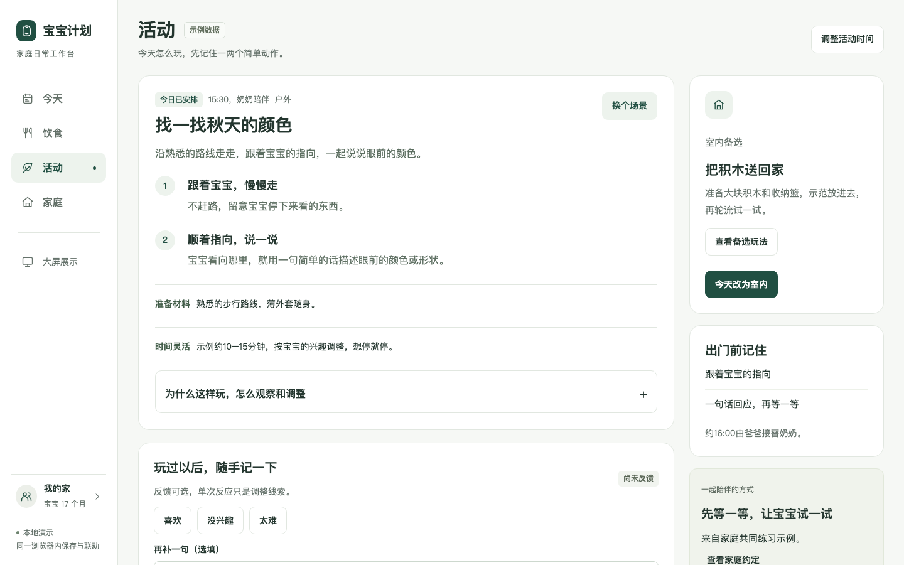
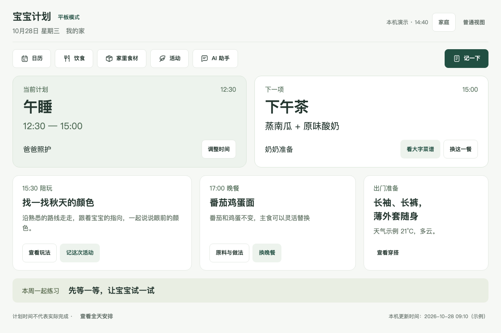
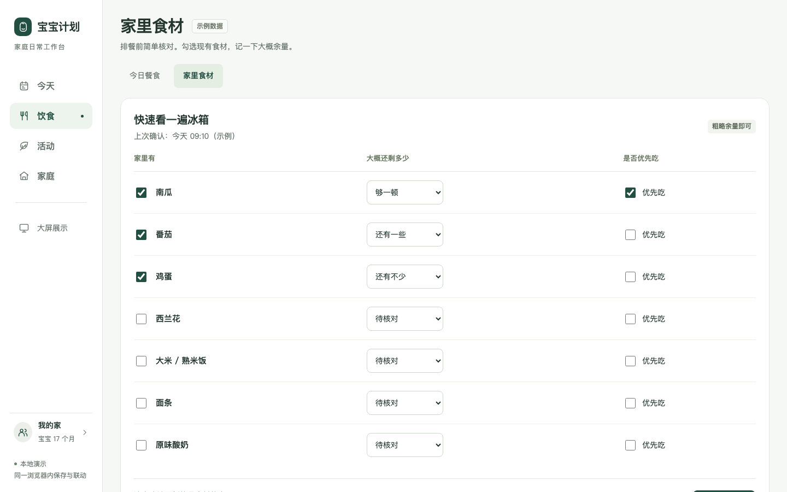
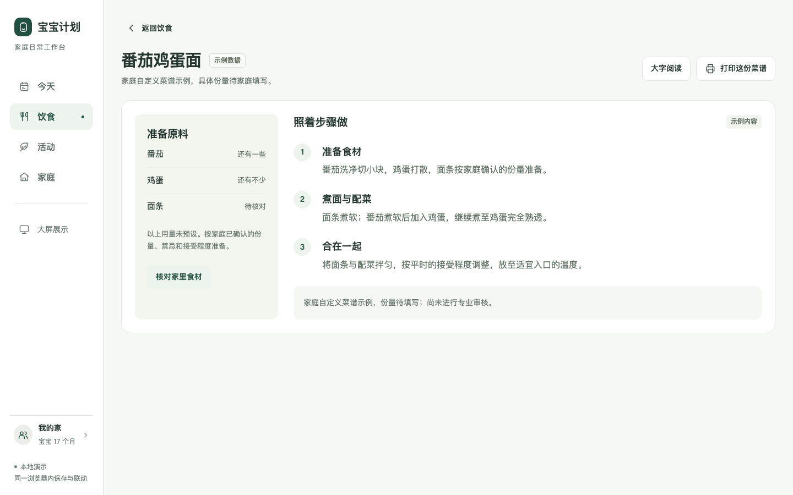
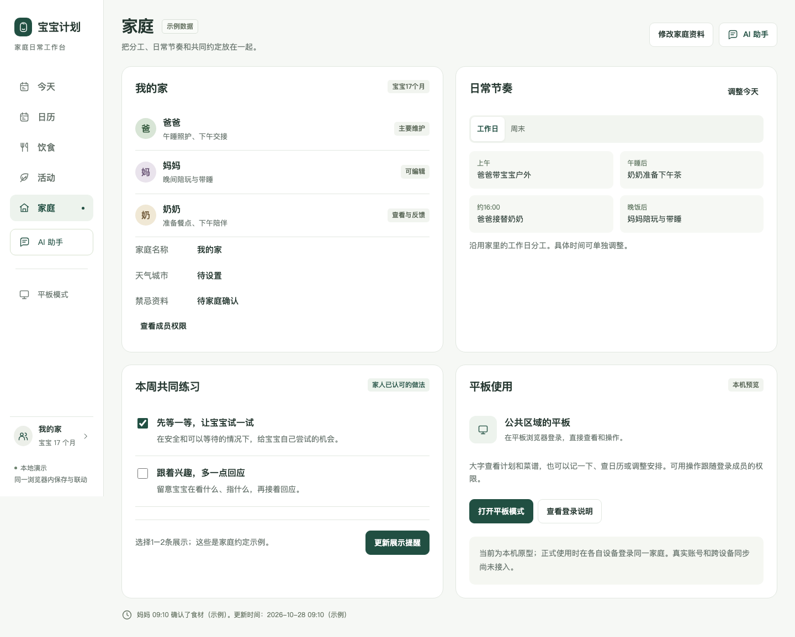
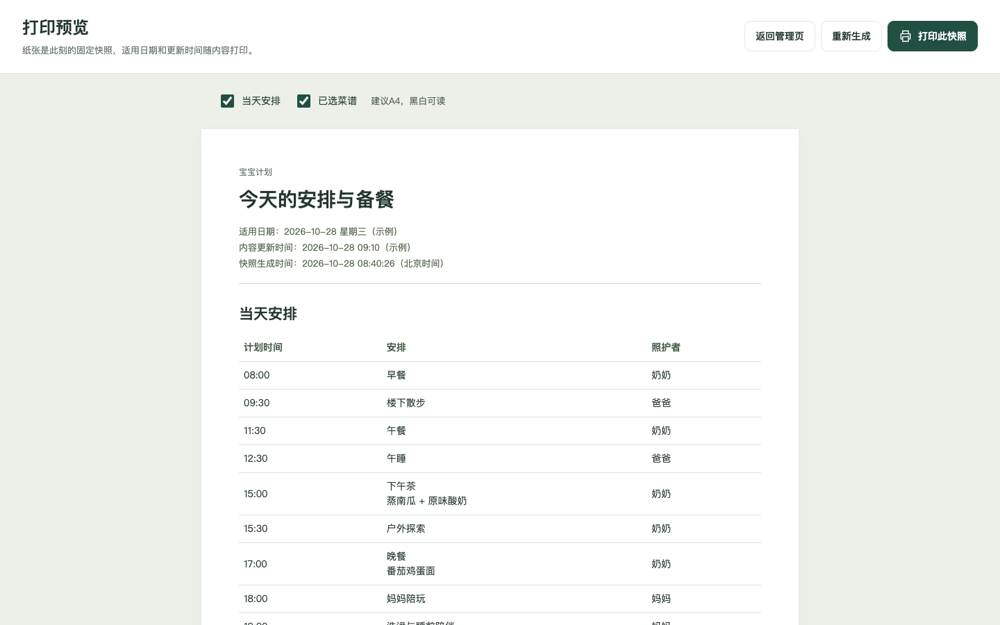

宝宝计划 · 日常工作台
A版完整核心页面 · 沿用你选定的松绿配色与清楚的信息层级

今天
先看现在和接下来，再看活动、晚餐、穿搭和当天安排。

饮食
按餐次查看，单独换一餐；优先食材和采购核对始终可见。

活动
先给两个容易记住的动作，再展开目的、观察、调整和来源。

平板模式
直接登录后查看和操作：看菜谱、换餐、查日历、记录与调整安排。

家里食材
是否现有、粗略余量、优先吃，以及最后确认时间。

菜谱
原料与编号步骤并排，支持大字与单道菜谱打印。

家庭
成员分工、工作日与周末节奏、共同提醒和平板入口。

打印预览
生成带日期与更新时间的固定快照，修改后可显式重新生成。